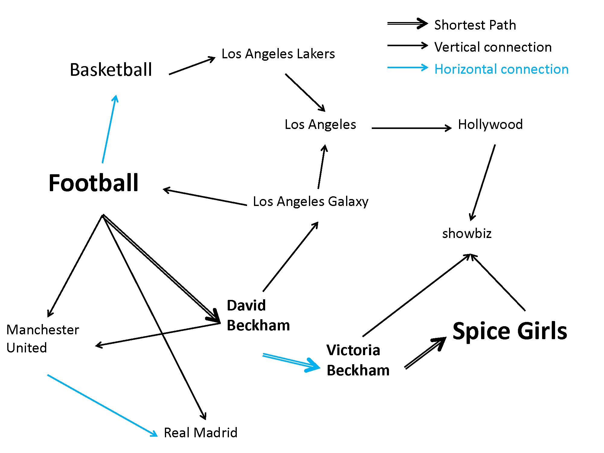
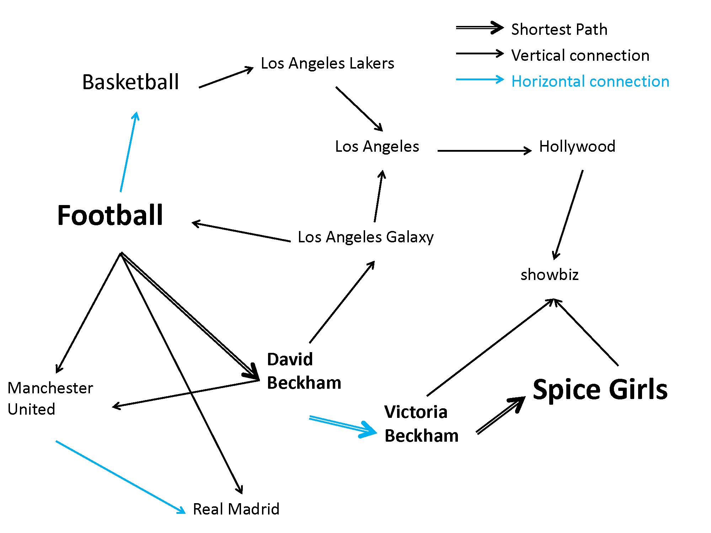

Mind Driftinga cognitive process of concept association
Introduction
We propose to build a semantic network for concept association, which tries to model human’s mind-drifting process. That is, we propose to model the process how people’s thinking drifts from concept A to concept B, and then from concept B to concept C, etc. We try to discover the association chain and latent bridge concepts for each pair of concepts in the network and measure how strong the association is. The discovered association chain, latent concepts and association strength measurement can find many applications in information retrieval, data mining and natural language process (NLP) area.
Goals
Our project aims to model humans’ association process more accurately with the “mind-drifting” idea, and then build a semantic network for concept association based on the model from given datasets. Finally we wish to compute semantic relatedness score and discover latent concepts in the association path between given concepts from the network, which will be applied to various applications to improve their performance, for example question answering systems and recommendation systems.
To be specific, goals of the project are set as follows:
To be specific, goals of the project are set as follows:
- Model human’s mind-drifting process, and provide algorithms to compute the probability score for each possible mind-drifting path, latent bridge concepts in such path, and the final relatedness score from any concept to another
- Mine several kinds of co-occurrence information from large text corpuses such as online encyclopedias (can be in any language), design an algorithm to combine these different kinds of co-occurrence together, and build a concept association network from the combined co-occurrence information and the mind-drifting model.
- Compute final relatedness score and discover latent concepts between words in the network, and apply them into various applications such us recommendation systems and question answering systems. Design and conduct experiments to evaluate our model and network.
Approach
Our project proposes a new idea to model what we would like call “mind-drifting”, the real association process happening in one’s mind when he tries to understand natural language (for example a question) and recall related knowledge. In mind-drifting, two concepts A and B are both given and we try to measure the probability one can associate A with B or vice versa, and the latent path through which such association is achieved. And we base our algorithm on two points, that is concepts may be connected not directly but through several latent bridge concepts to form a mind-drifting chain, and that each step of the mind-drifting process happens under a certain context and the association process can be different under different context. Then we can build a concept association network from datasets in any language based on the model, and discover mind-drifting chain and compute semantic relatedness more precisely. Finally we aim to apply our model to question answering system Watson and other applications like recommendation systems.
Our inspiration comes from the association activity in real human brain. Looking into the mind-drifting process, we discovered two important characteristics: First, each step of the association is only affected by the previous step, that is, the associate process is typically a one-way chain. Second, each step of association happens under certain context, and different people with different knowledge background may associate differently with the same start. With these features, we can probably try to adapt models like the Hidden Markov Models (HMM) to our use.
After designing the model, we can build a semantic network for concept association using various types of information from the datasets. And the mind-drifting process can be represented in the network. In human mind, the direct association from one concept to another is limited to relatively strong connections, while for relatively weak connections, human would probably complete the association by “drifting” through other bridging concepts, where each such bridge is a strong enough connection. For example, when we mention the concept “football”, one probably has little chance of being reminded of the pop group “Spice Girls”, for they don’t have much in common, nor do they appear together frequently in any context. However, it is very likely and quite natural for people to drift their mind from “football” to “David Beckham”, the world-renown British footballer, then from “David Beckham” to his wife “Victoria Beckham”, and finally from “Victoria Beckham” to her former pop group “Spice Girls”. This path of connection allows us to associate seemingly remote concepts together in a concept association network, which we call MindDrifter. Figure 1 shows a fragment of the network, where the arrows indicate the one-way association.

Our inspiration comes from the association activity in real human brain. Looking into the mind-drifting process, we discovered two important characteristics: First, each step of the association is only affected by the previous step, that is, the associate process is typically a one-way chain. Second, each step of association happens under certain context, and different people with different knowledge background may associate differently with the same start. With these features, we can probably try to adapt models like the Hidden Markov Models (HMM) to our use.
After designing the model, we can build a semantic network for concept association using various types of information from the datasets. And the mind-drifting process can be represented in the network. In human mind, the direct association from one concept to another is limited to relatively strong connections, while for relatively weak connections, human would probably complete the association by “drifting” through other bridging concepts, where each such bridge is a strong enough connection. For example, when we mention the concept “football”, one probably has little chance of being reminded of the pop group “Spice Girls”, for they don’t have much in common, nor do they appear together frequently in any context. However, it is very likely and quite natural for people to drift their mind from “football” to “David Beckham”, the world-renown British footballer, then from “David Beckham” to his wife “Victoria Beckham”, and finally from “Victoria Beckham” to her former pop group “Spice Girls”. This path of connection allows us to associate seemingly remote concepts together in a concept association network, which we call MindDrifter. Figure 1 shows a fragment of the network, where the arrows indicate the one-way association.

Figure 1. A fragment of the Concept Association Network
Demo
We provide a web interface demo to query the relatedness score and latent association path between each directional pair of words:
http://adapt.seiee.sjtu.edu.cn:8080/kb/
(Our network in the demo is cut to a much smaller version for exhibition, due to the limit of the server's memory. And it might be periodically closed to yeild such memory. Any problem? Please contact us.)
http://adapt.seiee.sjtu.edu.cn:8080/kb/
(Our network in the demo is cut to a much smaller version for exhibition, due to the limit of the server's memory. And it might be periodically closed to yeild such memory. Any problem? Please contact us.)
Members
- Kailang Jiang, Undergraduate at SJTU, cqjiangkl@163.com
- Keyang Zhang, Undergraduate at SJTU, yufengqingfeng@sjtu.edu.cn
- Kenny Q. Zhu, Distinguished Research Professor at SJTU, kzhu@cs.sjtu.edu.cn